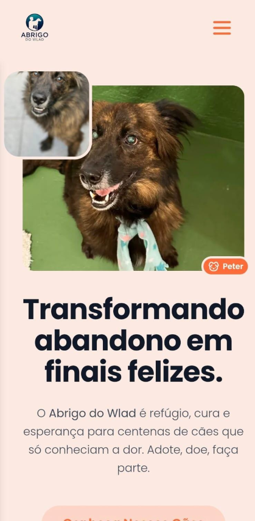
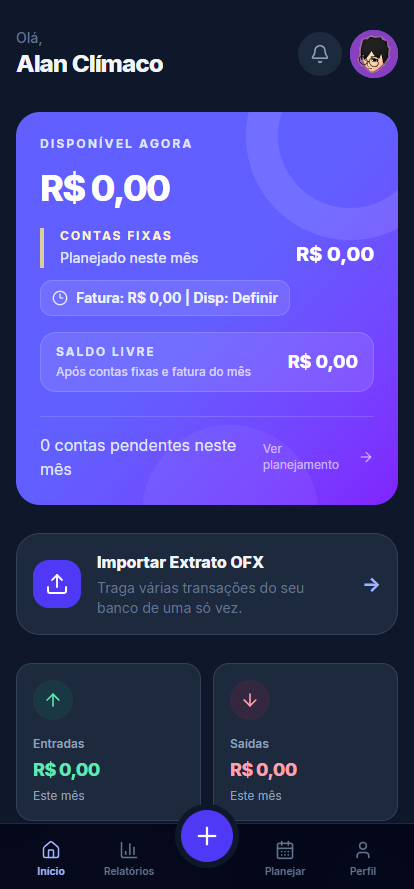
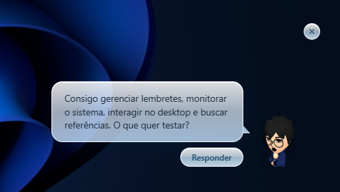
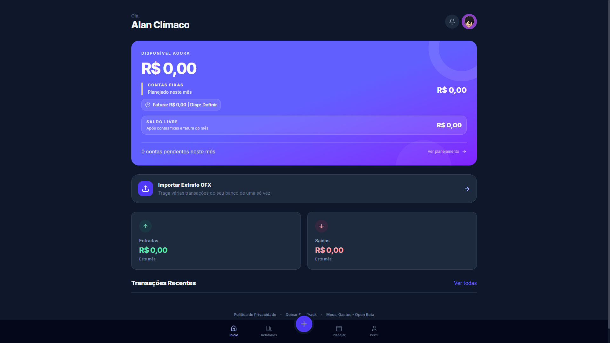
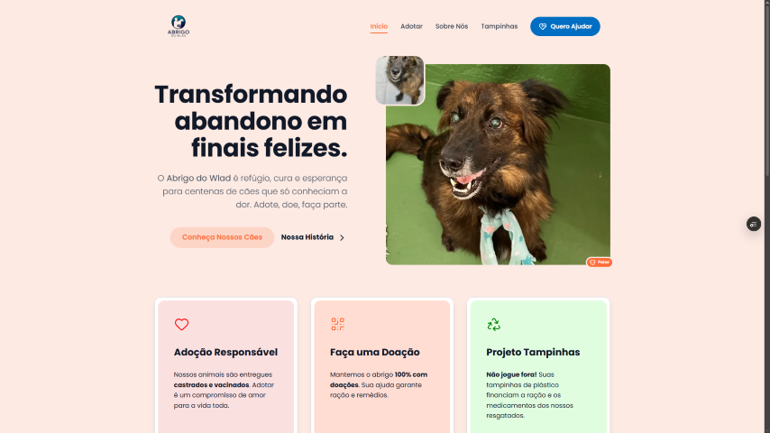
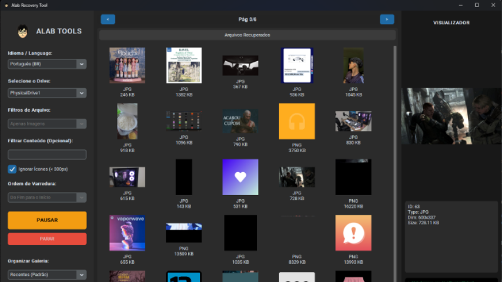
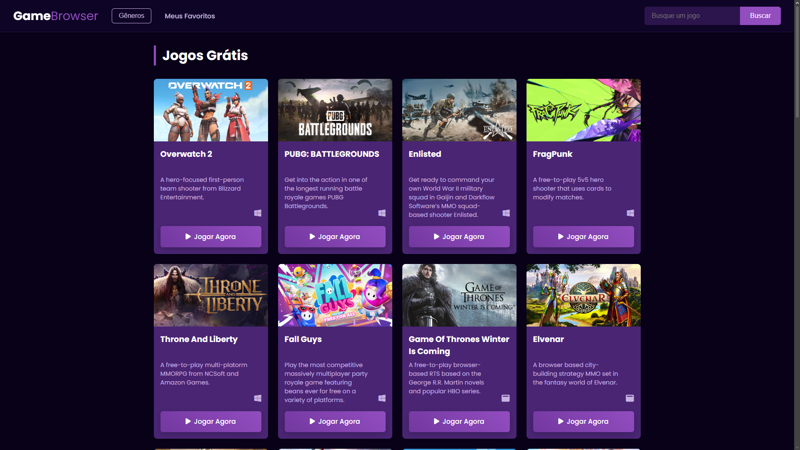

Abrigo do Wlad
Plataforma web oficial para adoção e transparência do abrigo. Desenvolvida com React e TypeScript, focando em alta performance. Utiliza Vite para build e CSS Modules.
Ver RepositórioProjetos recentes que demonstram minha capacidade de entregar soluções completas:

Plataforma web oficial para adoção e transparência do abrigo. Desenvolvida com React e TypeScript, focando em alta performance. Utiliza Vite para build e CSS Modules.
Ver Repositório
Aplicativo web progressivo para gestão financeira. Desenvolvido com arquitetura offline-first, permite controle de despesas, metas e importação 100% local de extratos bancários.
Ver ProjetoSou desenvolvedor de software com atuação em desenvolvimento web e mobile, focado em criar aplicações, sistemas e interfaces responsivas com código organizado e soluções práticas.
Também atuo em projetos independentes e freelance, desenvolvendo soluções sob medida para necessidades reais. Minha trajetória combina experiência prática, formação acadêmica e base técnica, e estou disponível para projetos freelance e novas colaborações.
Experiência profissional e formação que construíram minha atuação em desenvolvimento de software.
Estagiário em Desenvolvimento de Software Mai 2026 — Atual
Engenharia de Software 2025 — Atual
Graduação voltada a fundamentos de engenharia, arquitetura de software e desenvolvimento de soluções escaláveis.
Técnico em Informática Concluído em 2025
Formação técnica com base em programação, banco de dados e redes de computadores.
Projetos práticos aplicando conceitos de Front-end, Mobile e Back-end.

Um assistente de desktop interativo e não-intrusivo. Desenvolvido para ser leve e com design moderno, ele auxilia em rotinas do sistema sem interromper seu fluxo de trabalho.

Suíte desktop de diagnósticos de código e gerador de contexto para Inteligências Artificiais. Desenvolvida com arquitetura 100% local e offline, automatiza auditorias estáticas e compila bases de código com estimativa precisa de tokens.

Aplicativo web progressivo para gestão financeira. Desenvolvido com arquitetura offline-first, permite controle de despesas, metas e importação 100% local de extratos bancários.

Plataforma web oficial para adoção e transparência do abrigo. Focado em performance e SEO.

Ferramenta gráfica de análise forense para recuperação de dados em baixo nível (Raw Drive Analysis).

Catálogo de jogos gratuitos consumindo API em tempo real com filtros.
Este portfólio é apenas uma amostra. No meu GitHub você encontra diversos outros estudos, códigos fontes completos e minhas contribuições open source.
Ver GitHub CompletoVamos conversar sobre tecnologia ou oportunidades.
Entre em contato via WhatsApp, Email ou LinkedIn.